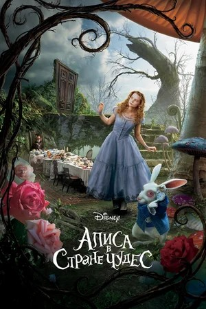

Лучшие фильмы
Пираты Карибского моря: Проклятие Черной жемчужины

Убийство в Восточном экспрессе

Сонная Лощина
Чарли и шоколадная фабрика
Фантастические твари и где они обитают

Дата рождения: 9 июня 1963 года
Возраст: 61 год
Снялся в 308 фильмах
Жанры: детективы, фантастика, триллер
| Год | Русское название | Оригинальное название | Роль |
|---|---|---|---|
| 2000 | Шоколад | Chocolat | Ру |
| 2001 | Пока не наступит ночь | Before Night Falls | Бон-Бон/лейтенант Виктор |
| 2003 | Однажды в Мексике | Once Upon a Time in Mexico | Шелдон Сэндс |
| 2004 | Волшебная страна | Finding Neverland | Дж. М. Барри |